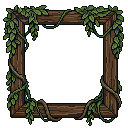
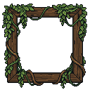

STAGE 4 · BOARD OUTER FRAME · REVIEW CANDIDATE
Timber and living ivy
Connected foliage around a sturdy modular wooden frame. Same 512×512 board, same 64×64 cells, same 580×580 outer frame target. All decorations remain outside the tiles.
Actual Unity preview
Switch between the prior snug frame and Stage 4. Full context contains the approved Stage 3 top and unchanged shared lower HUD. Static review actors; no live combat.
Open 1440×2720 Unity capture · Verification results · Handoff notes
Native modular assets
Thirteen pieces, saved and reopened in LibreSprite. Padded foliage, tiled rails and fixed-size corners. No stretching, blur or partial-alpha edges.
Rail_Top32×11 · 5 colorsRail_Left11×32 · 5 colorsRail_Right11×32 · 4 colorsRail_Bottom32×11 · 4 colorsCorner_TL23×23 · 5 colorsCorner_TR23×23 · 5 colorsCorner_BL23×23 · 5 colorsCorner_BR23×23 · 4 colorsIvy_TL56×64 · 8 colorsIvy_TR56×68 · 8 colorsIvy_BL60×42 · 8 colorsIvy_BR54×42 · 8 colorsSide_Swag44×202 · 13 colors
PixelLab design source
Candidate 02 supplies the hanging-ivy direction. The final assembly uses native timber ports, extracted and cleaned corner growth, and the approved full ivy swag for connected side coverage. One four-concept batch cost 10 generations.
Raw selected design
Controlled material palette
All four generated candidates · Golden references and source lineage · Native validation
Preserved and checked
Unity compilation and the Stage 4 test passed. Four zero-gap joins, native corner size, tiling, five geometry-resize probes and full-canvas bounds were checked. The approved top area, board cells/gems and lower HUD are pixel-identical. This remains a separate art-only scene. No merge; stop before Stage 5.